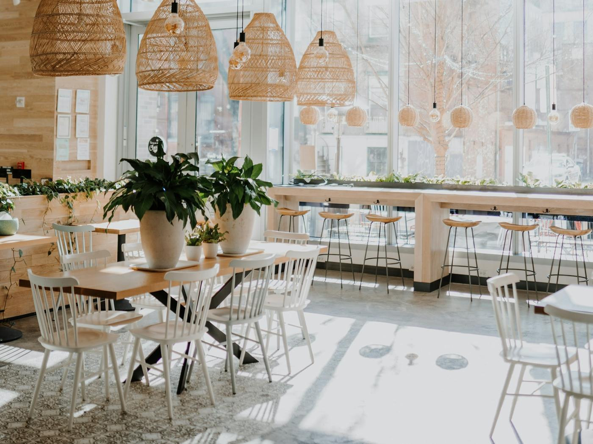
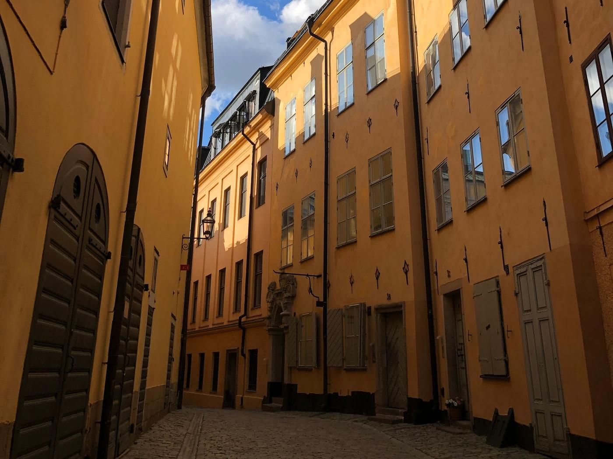

Johan Strand
Kökschef och delägare
Skriver menyn och står vid spisen de flesta kvällar. Fråga honom om dagens fisk.
Bryggans kök öppnade 2019 i det gamla förrådet vid färjeläget i Eriksberg. Vi är elva personer som lagar enkel mat av det som västkusten har mest av just nu.

Menyn skrivs om varje vecka. På måndagar ringer vi gårdarna och frågar vad de har, på morgnarna går någon av oss till fiskauktionen. Det som blir över blir personalmat eller lunch nästa dag.
Brödet bakas i huset från klockan sex: surdeg på svenskt vete, knäckebröd och kardemummabullar. Bullarna brukar ta slut till lunch på lördagar.


Johan Strand växte upp på Öckerö och lärde sig yrket på krogar i Stockholms gamla stan. Efter tolv år flyttade han hem för att laga mat närmare råvarorna.
”Jag vill att du ska känna igen allt på tallriken. Torsken ska smaka torsk, och såsen ska få dig att vilja ha mer bröd.”
Namnen och personerna är påhittade för designkonceptet.
Kökschef och delägare
Skriver menyn och står vid spisen de flesta kvällar. Fråga honom om dagens fisk.

Souschef och bagare
Ansvarar för brödet och brunchen. Har lärt halva köket att göra surdeg.

Restaurangchef
Tar hand om sällskap och event. Hon är den som ringer upp när du har skickat en förfrågan.
Vi har ingen certifiering att visa upp. Det här är vad vi gör varje dag.